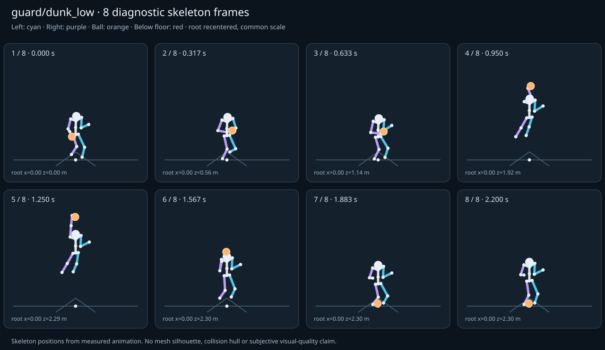

מה הוריד את הציון
- קפיצות פוזה: LeftHand בזמן 0.5833 ש׳; קפיצת סיבוב שקולה 121.391 מעלות ב־60Hz (אדום)
- כניסה ויציאה מול המתנה: פער ב־כניסה מול המתנה; יחס חריגה 3.3286 (אדום)
- מגע בכדור: פער פני כדור 0.0365 מ׳, RightHand, בזמן 0.5833 ש׳ (צהוב)
כיסוי: 100%. לא כל מדד חל על כל קליפ; הסטטוס והראיות מפורטים למטה.
שמונה פריימים
תצוגת שלד אבחונית שנבנתה מהפריימים הנמדדים. צד שמאל בכחול, ימין בסגול, כדור בכתום. מיקום השורש ממורכז לצפייה; מיקומו בעולם כתוב בכל פריים.

המדדים והראיות
| מדד | מצב | ערך | ציון | סף ופרטי מדידה |
|---|---|---|---|---|
| החלקת רגליים | ירוק | 0.001 height ratio | 98 | {
"definition": {
"label": "החלקת רגליים",
"unit": "height ratio",
"green": 0.01,
"yellow": 0.035,
"weight": 18,
"description": "Maximum horizontal sole displacement from the first sample of each declared support window, divided by character height. Inferred support is used only when no windows were supplied."
},
"value": 0.000793,
"status": "green",
"score": 98.41,
"evidence": {
"coordinateSpace": "native GLB external Motion node (applied once)",
"supportSource": "declared",
"windows": 6,
"samples": 104,
"maxDriftMeters": 0.00149,
"p95SpeedMetersPerSecond": 0.052026,
"worst": {
"bone": "RightFoot",
"t": 0.716667,
"start": 0.6,
"end": 0.8,
"driftMeters": 0.00149
}
}
} |
| חדירה לרצפה | ירוק | 0.002 height ratio | 90 | {
"definition": {
"label": "חדירה לרצפה",
"unit": "height ratio",
"green": 0.005,
"yellow": 0.02,
"weight": 15,
"description": "Maximum depth of the supplied sole probe points and all skeletal joint centers below the declared floor plane, divided by height. Sole probes are not a mesh collision audit."
},
"value": 0.002446,
"status": "green",
"score": 90.22,
"evidence": {
"samples": 2660,
"floorY": 0,
"probeKind": "declared sole probes plus skeletal joint centers (no mesh surfaces)",
"maxDepthMeters": 0.004598,
"worst": {
"t": 0.75,
"bone": "LeftFoot",
"depthMeters": 0.004598,
"y": -0.004598
}
}
} |
| קפיצות פוזה | אדום | 8.093 discontinuity ratio | 0 | {
"definition": {
"label": "קפיצות פוזה",
"unit": "discontinuity ratio",
"green": 1,
"yellow": 2.5,
"weight": 18,
"description": "Maximum adjacent 60 Hz-equivalent step: root-relative marker displacement / 0.04 height, root-relative rotation / 15 degrees, or root translation / 0.08 height. A fast continuous action can also exceed this screening threshold."
},
"value": 8.092733,
"status": "red",
"score": 0,
"evidence": {
"adjacentPairs": 132,
"observations": 2244,
"maxDegrees60Hz": 121.390989,
"maxMarkerStepHeight60Hz": 0.113539,
"maxRootStepHeight60Hz": 0.032013,
"worst": {
"ratio": 8.092732571606545,
"t": 0.583333,
"previousTime": 0.566667,
"bone": "LeftHand",
"markerStepHeight60Hz": 0.10951,
"degrees60Hz": 121.390989
}
}
} |
| חריגות אנטומיות | ירוק | 0 % affected frames | 100 | {
"definition": {
"label": "חריגות אנטומיות",
"unit": "% affected frames",
"green": 0.5,
"yellow": 3,
"weight": 14,
"description": "Percentage of frames with elbow or knee flexion above 165 degrees, neck bend above 80 degrees, or a segment length changing by more than 5%. Optional calibrated hinge checks detect reverse knee flexion above 8 degrees. Conservative marker limits do not diagnose axial joint twist."
},
"value": 0,
"status": "green",
"score": 100,
"evidence": {
"testedFrames": 133,
"affectedFrames": 0,
"checks": 2261,
"maxLimbFlexionDegrees": 149.961214,
"maxRelativeSegmentLengthChange": 0,
"hingeDirectionChecked": true,
"axialTwistChecked": false,
"violations": []
}
} |
| מגע בכדור | צהוב | 0.019 height ratio | 76 | {
"definition": {
"label": "מגע בכדור",
"unit": "height ratio",
"green": 0.015,
"yellow": 0.05,
"weight": 13,
"description": "Maximum absolute distance from the ball surface to the sampled, bone-transformed declared contact point, divided by height. Events are evaluated at their exact declared times by interpolation."
},
"value": 0.01939,
"status": "yellow",
"score": 76.24,
"evidence": {
"radiusMeters": 0.12,
"samples": 97,
"missed": [],
"contacts": [
{
"t": 0.583333,
"bone": "RightHand",
"gapMeters": 0.036454,
"signedGapMeters": -0.036454,
"centerDistanceMeters": 0.083546,
"contactPoint": [
-0.072593,
1.030736,
1.419219
],
"ballCenter": [
0,
1.030056,
1.460569
],
"declaredLocalPoint": true
},
{
"t": 0.183333,
"bone": "RightHand",
"gapMeters": 0.025483,
"signedGapMeters": -0.025483,
"centerDistanceMeters": 0.094517,
"contactPoint": [
-0.213848,
1.073053,
0.739545
],
"ballCenter": [
-0.17,
0.993306,
0.714026
],
"declaredLocalPoint": true
},
{
"t": 0.85,
"bone": "RightHand",
"gapMeters": 0.004861,
"signedGapMeters": -0.004861,
"centerDistanceMeters": 0.115139,
"contactPoint": [
-0.033844,
1.791294,
1.802189
],
"ballCenter": [
-0.04,
1.792082,
1.917161
],
"declaredLocalPoint": true
},
{
"t": 0.816667,
"bone": "RightHand",
"gapMeters": 0.004387,
"signedGapMeters": -0.004387,
"centerDistanceMeters": 0.115613,
"contactPoint": [
-0.025541,
1.617301,
1.78349
],
"ballCenter": [
-0.032083,
1.615746,
1.898907
],
"declaredLocalPoint": true
},
{
"t": 0.116667,
"bone": "RightHand",
"gapMeters": 0.003362,
"signedGapMeters": -0.003362,
"centerDistanceMeters": 0.116638,
"contactPoint": [
-0.338863,
0.823578,
0.529321
],
"ballCenter": [
-0.34,
0.706994,
0.525974
],
"declaredLocalPoint": true
},
{
"t": 0.05,
"bone": "RightHand",
"gapMeters": 0.003238,
"signedGapMeters": -0.003238,
"centerDistanceMeters": 0.116762,
"contactPoint": [
-0.338915,
0.824585,
0.387231
],
"ballCenter": [
-0.34,
0.707869,
0.384136
],
"declaredLocalPoint": true
},
{
"t": 0.883333,
"bone": "RightHand",
"gapMeters": 0.003043,
"signedGapMeters": -0.003043,
"centerDistanceMeters": 0.116957,
"contactPoint": [
-0.043487,
2.020759,
1.85064
],
"ballCenter": [
-0.047917,
2.020763,
1.967513
],
"declaredLocalPoint": true
},
{
"t": 0.783333,
"bone": "RightHand",
"gapMeters": 0.003012,
"signedGapMeters": -0.003012,
"centerDistanceMeters": 0.116988,
"contactPoint": [
-0.018566,
1.479288,
1.774418
],
"ballCenter": [
-0.02445,
1.475202,
1.891187
],
"declaredLocalPoint": true
},
{
"t": 1.016667,
"bone": "RightHand",
"gapMeters": 0.002546,
"signedGapMeters": -0.002546,
"centerDistanceMeters": 0.117454,
"contactPoint": [
-0.069874,
3.032252,
2.174893
],
"ballCenter": [
-0.073896,
3.031326,
2.292274
],
"declaredLocalPoint": true
},
{
"t": 0.983333,
"bone": "RightHand",
"gapMeters": 0.002508,
"signedGapMeters": -0.002508,
"centerDistanceMeters": 0.117492,
"contactPoint": [
-0.062546,
2.807293,
2.09502
],
"ballCenter": [
-0.068824,
2.807071,
2.212344
],
"declaredLocalPoint": true
},
{
"t": 0.75,
"bone": "RightHand",
"gapMeters": 0.00212,
"signedGapMeters": -0.00212,
"centerDistanceMeters": 0.11788,
"contactPoint": [
-0.013354,
1.331699,
1.728892
],
"ballCenter": [
-0.017387,
1.329402,
1.84668
],
"declaredLocalPoint": true
},
{
"t": 0.016667,
"bone": "RightHand",
"gapMeters": 0.00164,
"signedGapMeters": -0.00164,
"centerDistanceMeters": 0.11836,
"contactPoint": [
-0.339968,
0.944761,
0.357149
],
"ballCenter": [
-0.34,
0.826654,
0.349431
],
"declaredLocalPoint": true
},
{
"t": 0.916667,
"bone": "RightHand",
"gapMeters": 0.001457,
"signedGapMeters": -0.001457,
"centerDistanceMeters": 0.118543,
"contactPoint": [
-0.051196,
2.280725,
1.921619
],
"ballCenter": [
-0.05555,
2.280408,
2.040082
],
"declaredLocalPoint": true
},
{
"t": 0.15,
"bone": "RightHand",
"gapMeters": 0.001441,
"signedGapMeters": -0.001441,
"centerDistanceMeters": 0.118559,
"contactPoint": [
-0.34014,
0.943513,
0.623178
],
"ballCenter": [
-0.34,
0.825237,
0.615
],
"declaredLocalPoint": true
},
{
"t": 1.05,
"bone": "RightHand",
"gapMeters": 0.001376,
"signedGapMeters": -0.001376,
"centerDistanceMeters": 0.118624,
"contactPoint": [
-0.075781,
3.202145,
2.236288
],
"ballCenter": [
-0.077547,
3.201022,
2.354893
],
"declaredLocalPoint": true
},
{
"t": 0.95,
"bone": "RightHand",
"gapMeters": 0.001318,
"signedGapMeters": -0.001318,
"centerDistanceMeters": 0.118682,
"contactPoint": [
-0.056552,
2.549705,
2.00646
],
"ballCenter": [
-0.062613,
2.549638,
2.124987
],
"declaredLocalPoint": true
},
{
"t": 0.716667,
"bone": "RightHand",
"gapMeters": 0.001293,
"signedGapMeters": -0.001293,
"centerDistanceMeters": 0.118707,
"contactPoint": [
-0.008878,
1.196181,
1.639371
],
"ballCenter": [
-0.011176,
1.195398,
1.758053
],
"declaredLocalPoint": true
},
{
"t": 0.683333,
"bone": "RightHand",
"gapMeters": 0.000694,
"signedGapMeters": -0.000694,
"centerDistanceMeters": 0.119306,
"contactPoint": [
-0.004944,
1.108796,
1.532966
],
"ballCenter": [
-0.006104,
1.108684,
1.652267
],
"declaredLocalPoint": true
},
{
"t": 1.116667,
"bone": "RightHand",
"gapMeters": 0.000487,
"signedGapMeters": -0.000487,
"centerDistanceMeters": 0.119513,
"contactPoint": [
-0.078989,
3.296519,
2.28188
],
"ballCenter": [
-0.08,
3.294462,
2.401372
],
"declaredLocalPoint": true
},
{
"t": 1.183333,
"bone": "RightHand",
"gapMeters": 0.000475,
"signedGapMeters": -0.000475,
"centerDistanceMeters": 0.119525,
"contactPoint": [
-0.080192,
3.167408,
2.282156
],
"ballCenter": [
-0.08,
3.167325,
2.40168
],
"declaredLocalPoint": true
}
],
"contactDetailsTruncated": true,
"coordinateSpace": "native GLB external Motion node (applied once)"
}
} |
| כניסה ויציאה מול המתנה | אדום | 3.329 continuity ratio | 47 | {
"definition": {
"label": "כניסה ויציאה מול המתנה",
"unit": "continuity ratio",
"green": 1,
"yellow": 3,
"weight": 10,
"description": "Worst entry/exit mismatch to the best matching idle phase: RMS marker error / 0.04 height, RMS bone rotation / 25 degrees, or RMS endpoint velocity error / 0.75 height per second. Horizontal root translation is aligned; root height and body pose remain measurable."
},
"value": 3.32861,
"status": "red",
"score": 47.26,
"evidence": {
"entry": {
"ratio": 3.328610181435177,
"t": 0,
"idleTime": 0,
"markers": 17,
"rmsPositionHeight": 0.133144,
"rmsRotationDegrees": 43.891519,
"rmsVelocityHeightPerSecond": 0.691224,
"velocityEvaluated": true
},
"exit": {
"ratio": 3.205331375914611,
"t": 2.2,
"idleTime": 0,
"markers": 17,
"rmsPositionHeight": 0.128213,
"rmsRotationDegrees": 42.572017,
"rmsVelocityHeightPerSecond": 0.037231,
"velocityEvaluated": true
},
"worstEndpoint": "entry",
"alignment": "horizontal root translation; raw asset poses used when provided"
}
} |
| מהירות גוף מול צעדים | לא חל | — relative speed error | — | {
"definition": {
"label": "מהירות גוף מול צעדים",
"unit": "relative speed error",
"green": 0.2,
"yellow": 0.5,
"weight": 8,
"description": "Relative difference between average root travel speed and the median backward support-foot sweep speed relative to the root. Cadence and implied stride lengths are also reported. In-place clips need an explicit reference travel scenario; stationary actions are not scored as locomotion."
},
"value": null,
"status": "not-applicable",
"score": null,
"reason": "This action is not declared locomotion.",
"evidence": {}
} |
| סימטריה | ירוק | 0 relative mismatch | 100 | {
"definition": {
"label": "סימטריה",
"unit": "relative mismatch",
"green": 0.03,
"yellow": 0.1,
"weight": 4,
"description": "Maximum bilateral segment-length mismatch. Looping locomotion additionally compares reflected half-cycle leg markers; explicit pose symmetry compares simultaneous bilateral markers. One-sided actions retain unscored motion diagnostics, so a valid kick or dribble arm is not penalized for intentional asymmetry."
},
"value": 0,
"status": "green",
"score": 100,
"evidence": {
"mode": "structural",
"modeSource": "structural default for intentional asymmetry",
"structuralMismatch": 0,
"segments": [
{
"segment": "Arm-ForeArm",
"mismatch": 0
},
{
"segment": "ForeArm-Hand",
"mismatch": 0
},
{
"segment": "UpLeg-Leg",
"mismatch": 0
},
{
"segment": "Leg-Foot",
"mismatch": 0
}
],
"motionRmsHeight": null,
"worstMotion": null,
"bilateralPoseRmsHeightUnscored": 0.15189,
"note": "One-sided authored actions are checked for structural symmetry only."
}
} |